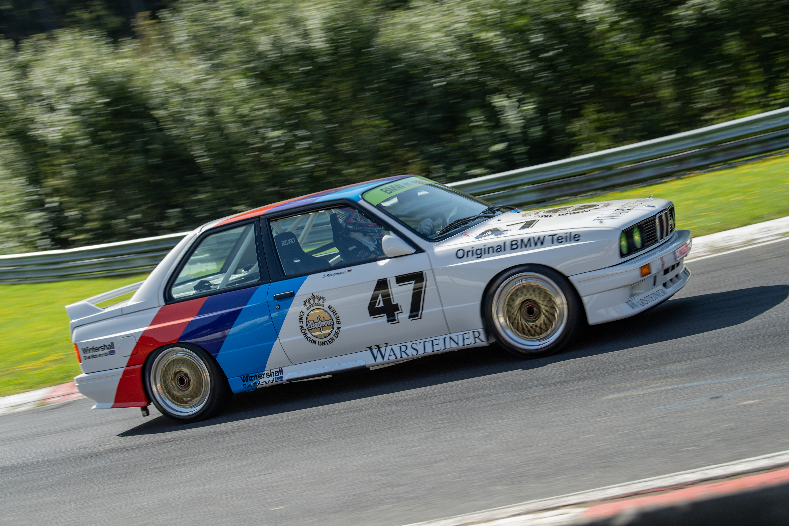

The Birth of a Motorsport Legend
The BMW E30 M3 was created with one purpose: to dominate touring car racing. Developed as a homologation special for Group A competition, BMW had to produce a road-going version in order to compete in motorsport. What followed was one of the most successful racing cars in history. Unlike the standard 3 Series of the time, the E30 M3 featured heavily revised bodywork including flared wheel arches, a redesigned rear window, and aerodynamic enhancements. Every change served performance.

Motorsport Dominance
The E30 M3 quickly became a global racing icon, winning championships in DTM, the European Touring Car Championship, and even events like the 24 Hours of Nürburgring. Its balance, precision, and high-revving engine made it unbeatable on tight circuits. To this day, it remains the most successful touring car ever built.

Engineering & Performance
At its heart was the naturally aspirated S14 inline-4 engine, producing up to 238 horsepower in later Evolution models. While those numbers may seem modest today, the lightweight chassis and razor-sharp steering made it one of the purest driver’s cars ever created. The E30 M3 defined what BMW M stood for: precision, balance, and racing DNA in a road car.